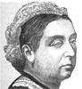
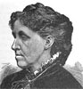

Collective Biographies of WomenAn Annotated Bibliography
Alison Booth
625.
Parton, James. Eminent Women: A Series of Sketches of Women Who Have Won Distinction by Their Genius and Achievements as Authors, Artists, Actors, Rulers, or within the Precincts of the Home. New York: Alden; Philadelphia: Hubbard, [1880s?]. New York: International; n.p.: Edgewood, 1880. New York: Lovell, 1890.
Search OCLC WorldCat for this title.
Search Google Books for this title.
Parton, James. Eminent Women: A Series of Sketches of Women Who Have Won Distinction by Their Genius and Achievements as Authors, Artists, Actors, Rulers, or within the Precincts of the Home. New York: Alden; Philadelphia: Hubbard, [1880s?]. New York: International; n.p.: Edgewood, 1880. New York: Lovell, 1890.
TOC: Sally Bush; The Brontë Sisters; Queen Victoria; Elizabeth Barrett Browning; Mrs. Stowe. and Uncle Tom's Cabin; Miss Alcott; George Eliot; Princess Louise; Fanny Mendelssohn; Angelica Kaufmann; Baroness Burdett-Coutts; Girlhood of Queen Elizabeth; The Wife of Thomas Carlyle; The Wife of Benedict Arnold; Adelaide Proctor; Lady Bloomfield; The Mother of Victor Hugo; Laura Bridgman; The Wife of George Washington in Her Workroom at Mt. Vernon; Madame de Staël and Napoleon Bonaparte; The Wife of Frederick the Great; The Flight of Eugénie; Caroline Herschel.
-
 Josephine
Josephine -
 Sally Bush
Sally Bush -
Queen Victoria
-
 Mrs. Harriet Beecher Stowe
Mrs. Harriet Beecher Stowe -
Miss Louisa M. Alcott
-
 Princess Louise
Princess Louise -
 Adelaide Procter
Adelaide Procter -
 Madame de Stael
Madame de Stael -
 Wife of Frederick the Great
Wife of Frederick the Great
Search OCLC WorldCat for this title.
Search Google Books for this title.